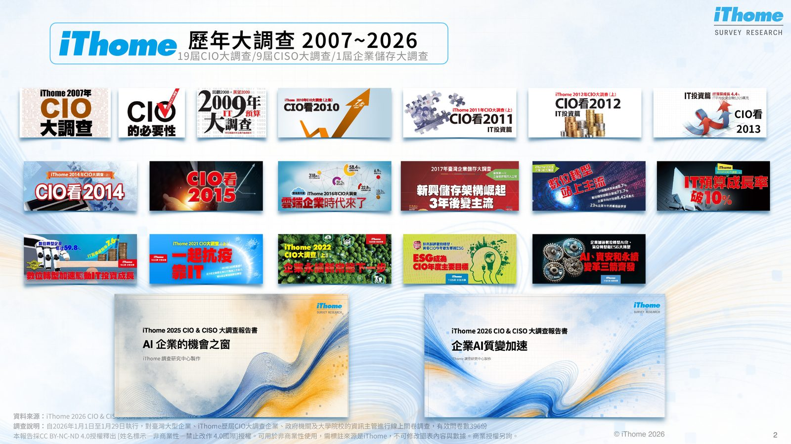
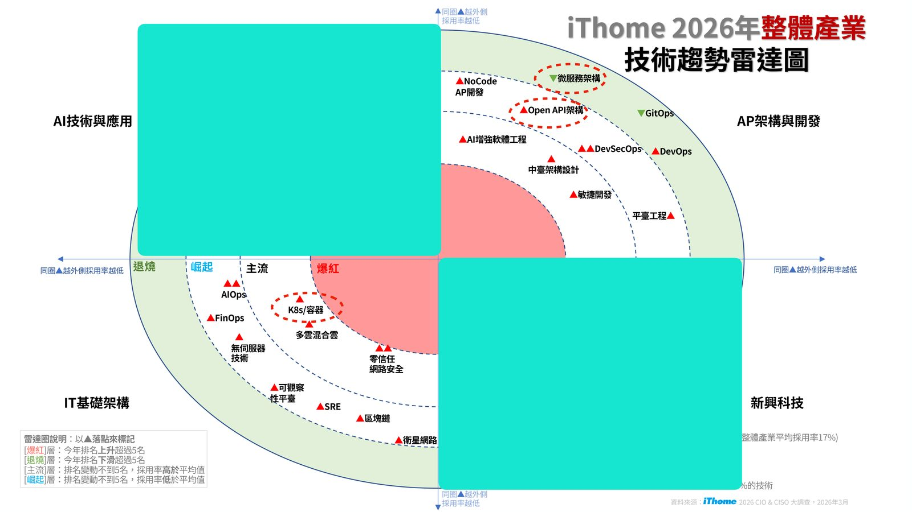
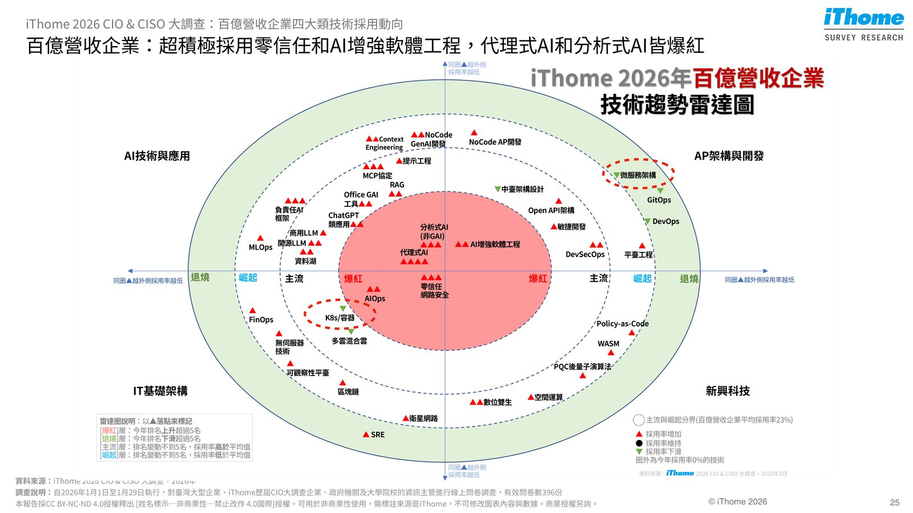
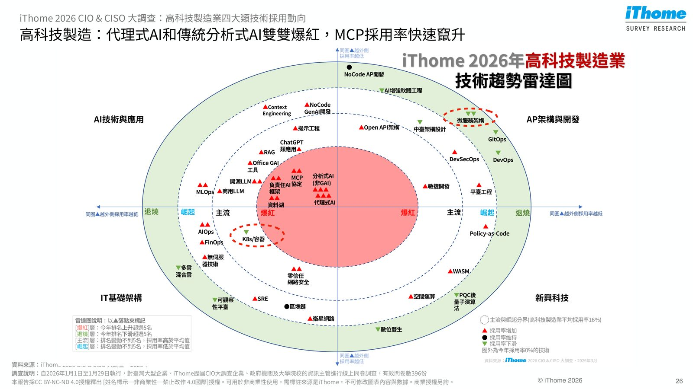

摘要
本講題基於 iThome 2026 年第 19 屆 CIO & CISO 大調查（396 份大型企業有效問卷）的第一手數據，剖析臺灣企業在 AI 轉型上的關鍵動向。調查指出，資安管理（82%）與生成式 AI 創新（58%）蟬聯年度目標前兩名，且整體 AI 預算年成長率達 65%（金融與政府業更突破 100%）。技術架構上，企業正經歷從「雲原生」向「AI 原生」的典範轉移：領先企業（佔 23%）對容器與微服務的單純擴展速度放緩，轉而大力投資代理式 AI（AI Agent，採用率 22%）與 MCP 協定（採用率達 27%）。實務上的關鍵啟示為：企業的核心競爭力已從傳統 IT 基礎建設的物理厚度，轉化為 AI 與軟體工程的投資深度，IT 部門也將轉型為數位勞動力與流程合規的管理者。
重點整理
- 396份有效問卷中，資安管理(82%)與GenAI創新(58%)蟬聯2026年CIO年度目標前兩名
- 整體企業AI(含GAI)預算年成長率達65%，金融業與政府學校的AI預算成長更超過100%
- 生成式AI應用成熟度調查顯示GenAI領先者(正式上線以上階段)企業占比達23%，醫療業比例居各產業之冠
- 2026年新興技術採用率：代理式AI、MCP協定與情境工程(Context Engineering)採用率大幅躍升，為排行榜最大黑馬
- 企業IT典範正從雲原生基礎轉向AI原生，新的企業競爭力取決於AI和軟體開發的投資深度，而非IT基礎建設厚度
重點圖片／架構圖




調查背景與樣本組成
iThome CIO & CISO大調查自2007年起已執行19屆CIO大調查與9屆CISO大調查，歷年累計參與CIO/CISO人次已達7,747人次。2026年調查於1月1日至1月29日執行，針對臺灣大型企業、歷屆CIO大調查企業、政府機關及大學院校的資訊主管進行線上問卷，回收396份有效問卷，其中71%受訪者為CIO/資訊主管、57%為CISO/資安主管，35%樣本來自營收百億元以上的臺灣500大企業。
2026年CIO年度目標與IT預算配置
調查顯示，資安管理(82%)與GenAI創新(58%)是企業CIO的兩大年度目標，其後依序為IT維運效能提升(53%)與營運持續與企業韌性(43%)。整體企業2026年六大IT領域預算分配中，地端IT基礎架構占18%、資安占8%、SaaS服務占8%、公雲IT基礎架構占7%、AI(含GAI)占6%、行動應用占6%，雲端與地端基礎架構投資比為28%:72%。若看成長率，整體企業AI預算年成長高達65%，金融業成長118%、政府學校成長134%，顯示AI預算已進入快速成長期，而傳統基礎架構預算則相對穩健。
生成式AI導入成熟度與產業落差
調查依Gartner AI成熟度模型將企業分為計畫階段、導入與驗證階段、正式上線階段、擴大採用階段與深化內化階段，其中處於正式上線以上階段者定義為「GenAI領先者」。整體而言，33%企業仍處於計畫階段、26%處於導入與驗證階段，而GenAI領先者占比達23%。各產業中，醫療業的GenAI領先者比率最高，近4成醫療業者已躋身領先者行列。一位醫學中心IT主管在報告中指出，AI代理在醫療現場的機會不在於直接帶來營收成長，而在於協助撐住系統運作，IT角色也將從系統維運者轉型為流程設計者與數位勞動力管理者。
新興技術採用動向：代理式AI與MCP協定崛起
2026年企業IT新興技術採用率排行榜顯示，ChatGPT/Gemini等應用(42%)、RAG(37%)、Office GAI工具(35%)、零信任網路安全(34%)持續領先，而代理式AI(AI Agent)採用率從2025年的20%躍升至2026年的22%，MCP協定採用率也從9%大幅成長至27%。透過各產業的技術趨勢雷達圖可以看出，整體企業與百億營收企業的代理式AI、情境工程(Context Engineering)與分析式AI(非GAI)均呈現「爆紅」態勢，即今年排名上升超過5名。
AI原生的崛起：企業IT典範轉移
報告最後聚焦於企業IT架構典範由「雲原生」轉向「AI原生」的轉變：在GenAI領先企業中，K8s/容器、微服務架構等雲原生基礎技術採用率出現下滑，而AI增強軟體工程、開源LLM、RAG、代理式AI等AI原生象限的技術採用率則明顯提升。報告總結指出，臺灣企業IT戰略正從基礎架構轉型，邁向智慧應用與生產力的破壞式升級，新的企業競爭力將取決於AI和軟體開發的投資深度，而非IT基礎建設的厚度。